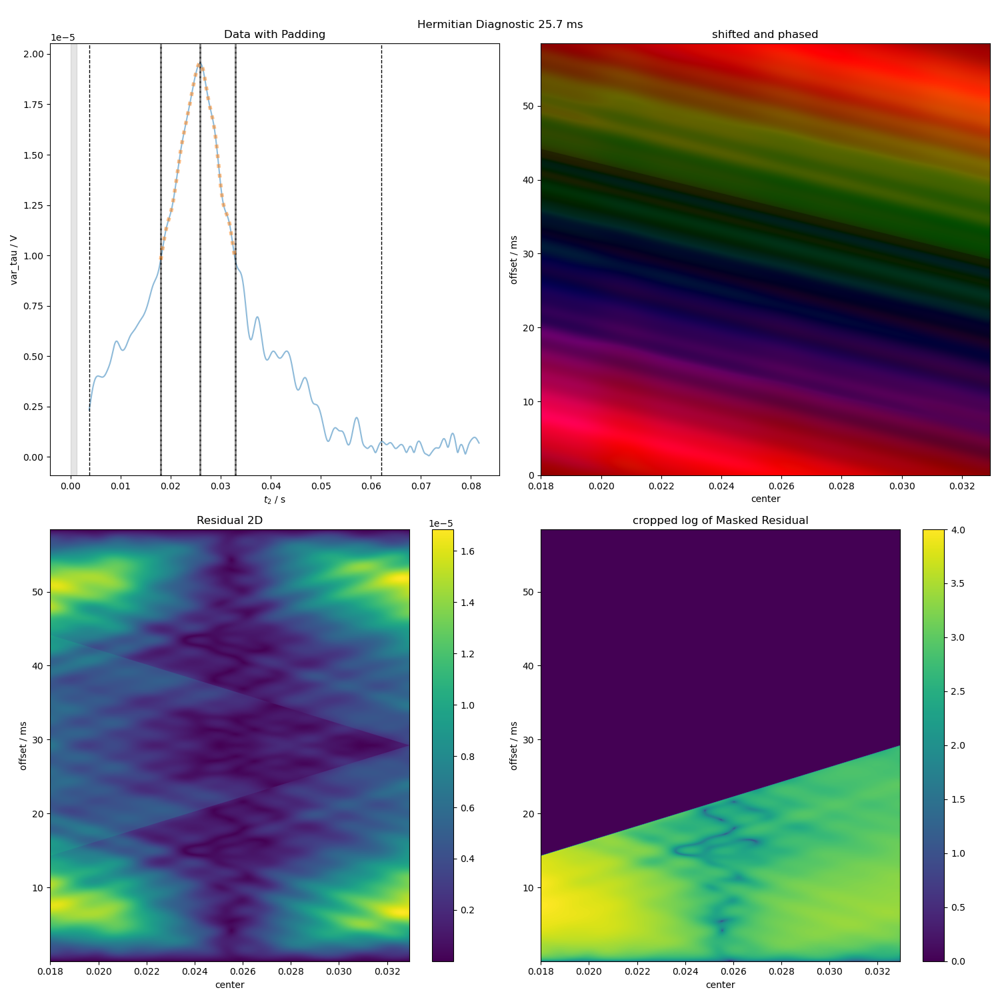

Note
Go to the end to download the full example code
Phasing and Timing Correction Using a Varied Tau Experiment¶
Take real data with varying echo times, and demonstrate how we can automatically find the zeroth order phase and the center of the echo in order to get data that’s purely real in the frequency domain.
Here, we specifically check to see whether or not the offset between the
programmed τ and the center of the echo
(as found by hermitian_function_test())
is consistent.
- 

C:\Users\jmfranck\pyspecdata.0.log appears to be locked or otherwise inaccessible: I'm going to explore other options for fileno
---------- logging output to C:\Users\jmfranck\pyspecdata.3.log ----------
--> Hermitian_Phasing_Actual_var_tau.py(46):pyspecdata.core <module> 2023-05-13 16:25:51,650
INFO: programmed tau: 0.010676666666666666
c:\users\jmfranck\git_repos\pyspecdata\pyspecdata\core.py:1959: UserWarning: linestyle is redundantly defined by the 'linestyle' keyword argument and the fmt string ":" (-> linestyle=':'). The keyword argument will take precedence.
retval = myplotfunc(*plotargs,**kwargs)
c:\users\jmfranck\git_repos\pyspecdata\pyspecdata\core.py:3842: RuntimeWarning: divide by zero encountered in log10
retval = func(self.data)
--> Hermitian_Phasing_Actual_var_tau.py(54):pyspecdata.core <module> 2023-05-13 16:25:52,072
INFO: best shift is: 0.010314832465961977
--> Hermitian_Phasing_Actual_var_tau.py(46):pyspecdata.core <module> 2023-05-13 16:25:52,073
INFO: programmed tau: 0.015676666666666665
--> Hermitian_Phasing_Actual_var_tau.py(54):pyspecdata.core <module> 2023-05-13 16:25:52,654
INFO: best shift is: 0.01558355984066198
--> Hermitian_Phasing_Actual_var_tau.py(46):pyspecdata.core <module> 2023-05-13 16:25:52,654
INFO: programmed tau: 0.020676666666666663
--> Hermitian_Phasing_Actual_var_tau.py(54):pyspecdata.core <module> 2023-05-13 16:25:53,414
INFO: best shift is: 0.02067913655046574
--> Hermitian_Phasing_Actual_var_tau.py(46):pyspecdata.core <module> 2023-05-13 16:25:53,414
INFO: programmed tau: 0.025676666666666664
--> Hermitian_Phasing_Actual_var_tau.py(54):pyspecdata.core <module> 2023-05-13 16:25:54,391
INFO: best shift is: 0.025502619358289683
--> Hermitian_Phasing_Actual_var_tau.py(46):pyspecdata.core <module> 2023-05-13 16:25:54,392
INFO: programmed tau: 0.030676666666666665
--> Hermitian_Phasing_Actual_var_tau.py(54):pyspecdata.core <module> 2023-05-13 16:25:55,354
INFO: best shift is: 0.03032610216611363
--> Hermitian_Phasing_Actual_var_tau.py(46):pyspecdata.core <module> 2023-05-13 16:25:55,354
INFO: programmed tau: 0.03567666666666666
--> Hermitian_Phasing_Actual_var_tau.py(54):pyspecdata.core <module> 2023-05-13 16:25:56,364
INFO: best shift is: 0.03579271601498077
--> Hermitian_Phasing_Actual_var_tau.py(46):pyspecdata.core <module> 2023-05-13 16:25:56,365
INFO: programmed tau: 0.04067666666666666
--> Hermitian_Phasing_Actual_var_tau.py(54):pyspecdata.core <module> 2023-05-13 16:25:57,410
INFO: best shift is: 0.04069040625061739
--> Hermitian_Phasing_Actual_var_tau.py(46):pyspecdata.core <module> 2023-05-13 16:25:57,411
INFO: programmed tau: 0.045676666666666664
--> Hermitian_Phasing_Actual_var_tau.py(54):pyspecdata.core <module> 2023-05-13 16:25:58,518
INFO: best shift is: 0.04464813573396012
--> Hermitian_Phasing_Actual_var_tau.py(46):pyspecdata.core <module> 2023-05-13 16:25:58,518
INFO: programmed tau: 0.05067666666666666
--> Hermitian_Phasing_Actual_var_tau.py(54):pyspecdata.core <module> 2023-05-13 16:25:59,749
INFO: best shift is: 0.050312636056994396
--> Hermitian_Phasing_Actual_var_tau.py(46):pyspecdata.core <module> 2023-05-13 16:25:59,750
INFO: programmed tau: 0.05567666666666666
--> Hermitian_Phasing_Actual_var_tau.py(54):pyspecdata.core <module> 2023-05-13 16:26:00,896
INFO: best shift is: 0.05540821276679815
--> Hermitian_Phasing_Actual_var_tau.py(46):pyspecdata.core <module> 2023-05-13 16:26:00,896
INFO: programmed tau: 0.060676666666666663
c:\users\jmfranck\git_repos\proc_scripts\pyspecProcScripts\phasing.py:264: RuntimeWarning: More than 20 figures have been opened. Figures created through the pyplot interface (`matplotlib.pyplot.figure`) are retained until explicitly closed and may consume too much memory. (To control this warning, see the rcParam `figure.max_open_warning`). Consider using `matplotlib.pyplot.close()`.
fig_forlist, ax_list = plt.subplots(2, 2, figsize=(15, 15))
--> Hermitian_Phasing_Actual_var_tau.py(54):pyspecdata.core <module> 2023-05-13 16:26:01,937
INFO: best shift is: 0.060281167193163884
--> Hermitian_Phasing_Actual_var_tau.py(46):pyspecdata.core <module> 2023-05-13 16:26:01,937
INFO: programmed tau: 0.06567666666666667
--> Hermitian_Phasing_Actual_var_tau.py(54):pyspecdata.core <module> 2023-05-13 16:26:02,791
INFO: best shift is: 0.06453572638775731
--> Hermitian_Phasing_Actual_var_tau.py(46):pyspecdata.core <module> 2023-05-13 16:26:02,791
INFO: programmed tau: 0.07067666666666667
--> Hermitian_Phasing_Actual_var_tau.py(54):pyspecdata.core <module> 2023-05-13 16:26:04,098
INFO: best shift is: 0.0592917348223282
programmed tau / ms estimated tau / ms difference / ms
------------------- ------------------ ---------------
10.68 10.31 0.36
15.68 15.58 0.09
20.68 20.68 0.00
25.68 25.50 0.17
30.68 30.33 0.35
35.68 35.79 0.12
40.68 40.69 0.01
45.68 44.65 1.03
50.68 50.31 0.36
55.68 55.41 0.27
60.68 60.28 0.40
65.68 64.54 1.14
70.68 59.29 11.38
from pyspecdata import *
from pyspecProcScripts import *
from pylab import *
import sympy as s
from collections import OrderedDict
init_logging(level='debug')
rcParams["image.aspect"] = "auto" # needed for sphinx gallery
# sphinx_gallery_thumbnail_number = 1
t2, td, vd, power, ph1, ph2 = s.symbols("t2 td vd power ph1 ph2")
f_range = (-400, 400)
filename = '201113_TEMPOL_capillary_probe_var_tau_1'
signal_pathway = {'ph1':1,'ph2':0}
with figlist_var() as fl:
for nodename,file_location,postproc,label in [
('var_tau','ODNP_NMR_comp/test_equipment/var_tau','spincore_var_tau_v1',
'tau is 1 ms'),
]:
data = find_file(filename,exp_type=file_location,expno=nodename,
postproc=postproc,lookup=lookup_table)
data = data['tau',:-7]
tau_list = list(data.getaxis('tau'))
data.reorder(['ph1','ph2','tau','t2'])
data = data['t2':f_range]
mytable = []
mytable.append(['programmed tau / ms','estimated tau / ms','difference / ms'])
for j in range(len(tau_list)):
tablerow = []
alias_slop=3
programmed_tau = tau_list[j]
tablerow.append(programmed_tau/1e-3)
logger.info(strm("programmed tau:",programmed_tau))
this_data = data['tau',j]
this_data.ift("t2")
fl.basename = '%0.1f ms'%(programmed_tau/1e-3)
best_shift = hermitian_function_test(
select_pathway(this_data, signal_pathway),
aliasing_slop=alias_slop,
fl=fl)
logger.info(strm("best shift is:",best_shift))
tablerow.append(best_shift/1e-3)
diff = abs(best_shift - programmed_tau)
tablerow.append(diff/1e-3)
mytable.append(tablerow)
def tabulate(mytable):
print(' '.join(mytable[0]))
strlens = [len(j) for j in mytable[0]]
print(' '.join('-'*j for j in strlens))
formatstr = ' '.join(f'%{str(j)}.2f' for j in strlens)
for j in mytable[1:]:
print(formatstr%tuple(j))
tabulate(mytable)
Total running time of the script: ( 0 minutes 23.991 seconds)